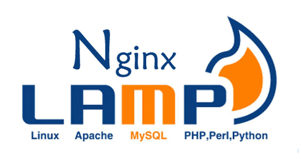
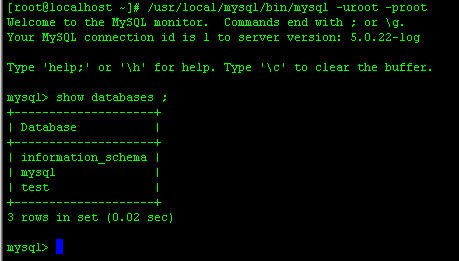
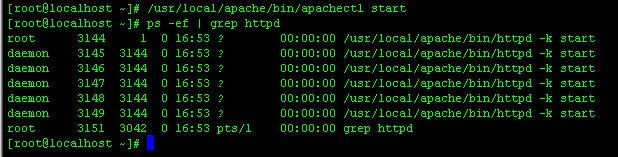
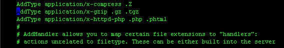
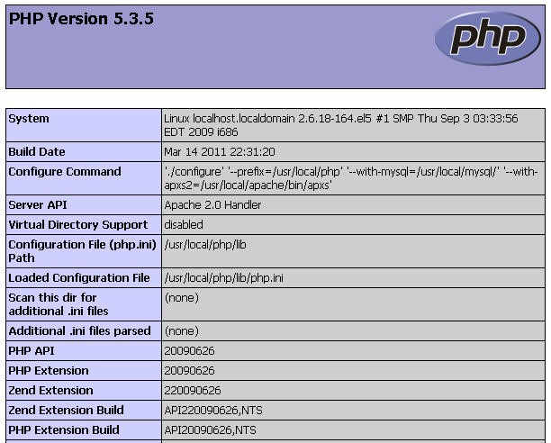

CentOS下搭建LAMP
LAMP简介
Linux+Apache+Mysql +Perl/PHP/Python一组常用来搭建动态网站或者服务器的开源软件，本身都是各自独立的程序，但是因为常被放在一起使用，拥有了越来越高的兼容度，共同组成了一个强大的Web应用程序平台。随着开源潮流的蓬勃发展，开放源代码的LAMP已经与J2EE和.Net商业软件形成三足鼎立之势，并且该软件开发的项目在软件方面的投资成本较低，因此受到整个IT界的关注。从网站的流量上来说，70%以上的访问流量是LAMP来提供的，LAMP是最强大的网站解决方案,开发者在Windows操作系统下使用这些Linux环境里的工具称为使用WAMP。

Linux 是免费开源软件，这意味着源代码可用的操作系统。
Apache
Apache 是使用中最受欢迎的一个开放源码的WEB服务器软件。
MySQL
MySQL 是多线程、多用户的SQL数据库管理系统。
MySQL 已拥有由Oracle公司自 2010 年 1 月 27 日通过SUN购买。SUN 最初于 2008 年 2 月 26 日收购 MySQL。
PHP，Perl 或 Python
PHP 是一种编程语言最初设计生产动态网站。PHP 是主要用于服务器端的应用程序软件。Perl 和 Python 类似。
| WebSite | System | Server | Database | language |
|---|---|---|---|---|
| Yahoo | FreeBSD + Linux | Apache | MySQL | PHP |
| FreeBSD | Apache | MySQL + Memcached | PHP | |
| Wikimedia | Linux | Apache + Lighttpd | MySQL + Memcached | PHP |
| Flickr | Redhat | Apache | MySQL + Memcached | PHP + Perl |
| Sina | FreeBSD + Solaris | Apache + Nginx | MySQL + Memcached | PHP |
| YouTube | Suse Linux | Apache + Lighttpd | MySQL | Python |
搭建LNMP
源代码编译安装
- 首先准备一下软件包，如下：
1 | |
以上是LAMP搭建必备的安装包，可以去各个官方网站上下载，这三个安装包没有先后的安装顺序，先将以上三个包上出至Linux下的/usr/local/src目录下，并给予可执行权限。
- 安装mysql，这里要介绍mysql的源代码编译安装方式，进入已经部署好饿的Centos linux学习环境，通过命令ps -ef | grep mysql来查看是否有运行的mysql进程，然后可以通过一些命令来查找mysql是否已经安装，具体如下：
1 | |
如图所示：

- 安装apache，命令行如下：
1 | |
启动apache服务，如下图所示：

设置apache自动随操作系统启动，命令如下：
1 | |
- 安装php，命令行如下：
1 | |
上述就是PHP的安装过程。
- 测试
安装完成以上个包之后，需要更改apache的配置文件，来达到解析php文件的目的
1 | |
通过“/”来查找到AddType application/x-gzip .tgz，这里需要注意的是，不是带有的注意标记的#，在找到AddType application/x-gzip .tgz的后面添加如图所示文件：

添加文件为AddType application/x-httpd-php .php .phtml，表示apache服务中可以解析php格式文件
接下来要检查apache目录下生成的php动态连接库文件，在目录/usr/local/apache/modules，找到是否存在 libphp5.so文件
一系列安装结束之后，通过一个简单的php测试页面来测试LAMP环境搭建成功与否。
1 | |
内容为:
1 | |
启动httpd
在浏览器上输入：http://ip/index.php，显示如下页面，表明成功；

里面分别显示php、apache和mysql的相关版本信息等内容。
yum安装
1 | |
练习：部署并发布禅道